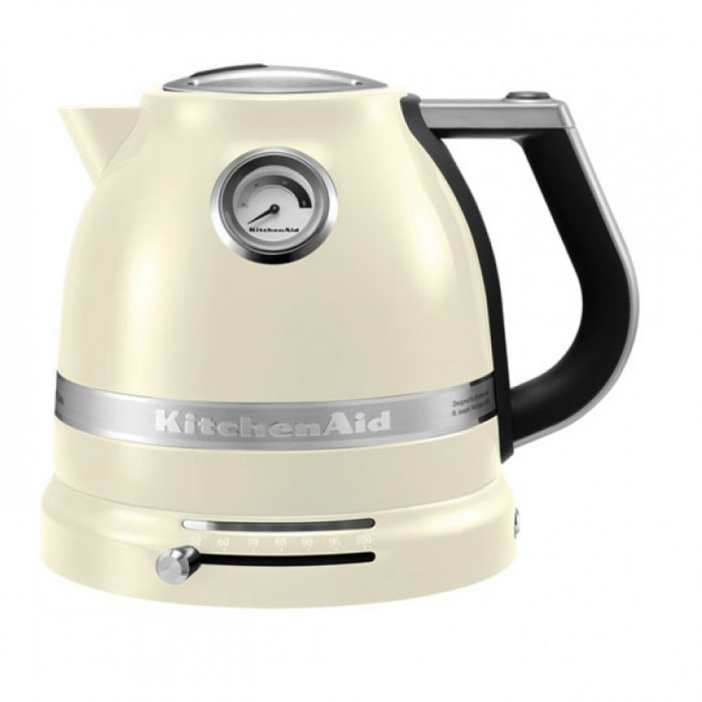

Чайник BORK K810 VS KitchenAid 5KEK1522
Современная техника отличается от ретро тем, что экономит самое ценное на сегодняшний день – время. Ретро дизайн - это на любителя, а вот ретро технологии это вчерашний, а быть может и позавчерашний день. Покупая KitchenAid, вы покупаете не только ретро дизайн, но и ретро технологии.
KitchenAid 5KEK1522
Преимущества KitchenAid, которые пытаются продать:
- Дизайн и выбор цветов
- Срок гарантии 3 года
- Компания, которая изобрела миксеры в 1919 году
- KitchenAid переводится, как кухонный помощник
-
Двойные стенки корпуса, снижают уровень шума и нагрев корпуса*
Примечание: Цельнометаллическая колба чайника Artisan Pro Line, с внутренней стороны покрыта синтетическим материалом. При открывании крышки чайника, ощущается характерный запах.
Характеристики KitchenAid:
- Потребляемая мощность: 2400 Вт
- Объём л.: 1,5 л
- Регулируемая температура от 50°C до 100°C, с подсветкой шкалы выбора температуры
- Термоиндикатор с отображением температуры даже без подставки
- Удобная нескользящая ручка
- Окошко для контроля уровня воды с подсветкой
- Съемный фильтр для накипи
- База с поворотом 360°
Преимущества чайной станции BORK K810:
- Современный тип управления (дисплей, 5 автоматических температурных режимов + ручной режим программирования, гарантирующие идеальное раскрытия вкуса, 3 варианта крепости + ручное программирование, для идеального заваривания, каждого чая, on-line отображение температуры воды)
- Умный чайник BORK K810, способен не только вскипятить воду до заданной температуры, но и заварить чай с помощью автоматического опускания корзины. Функция лифта, позволяет не контактировать заварке с водой, прежде чем не будет достигнута оптимальная температура для заваривания. Эта опция способствует лучшей вкусовой и ароматной передачи Вашего чая
- Отложенный старт до 24 часов. Модель самостоятельно вскипятит воду и заварит любимый чай к заданному времени. Так просто просыпаться, когда Вас на кухне уже ждёт ароматный, согревающий чай
- Поддержание температуры. После окончания цикла заваривания или кипячения чайник поддержит температуру воды в течение 1 часа
- Экологичность. Корпус изящного чайника изготовлен из немецкого термостойкого стекла Schott Duran, не содержащего примеси и посторонние компоненты. Такое невероятное зрелище, когда в бурлящую воду опускается корзина с заваркой, и вода окрашивается янтарными или мятными красками
- Реальная цена, отличного продукта
Покупая KitchenAid, вы покупаете не только ретро дизайн, но и ретро технологии.